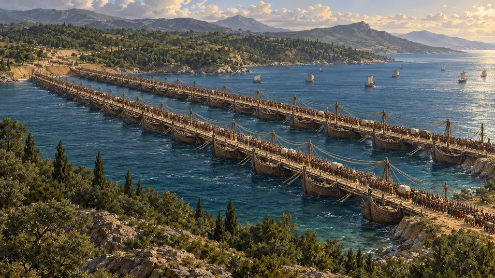
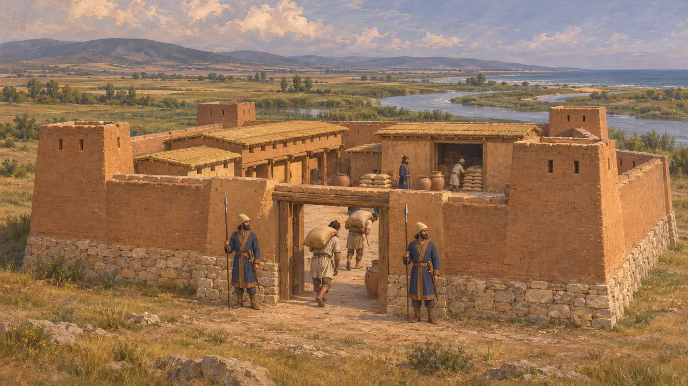
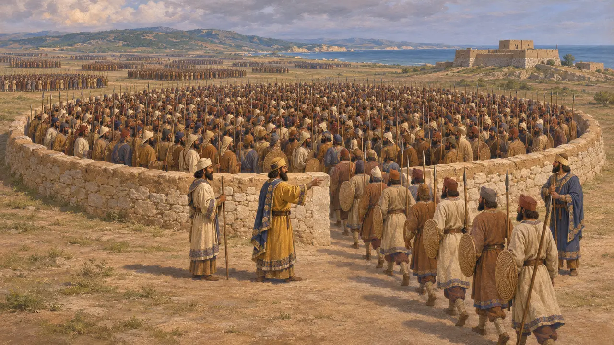
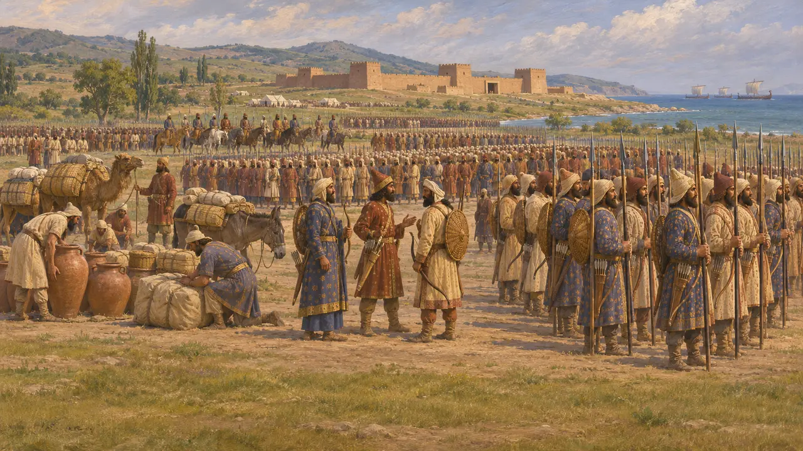
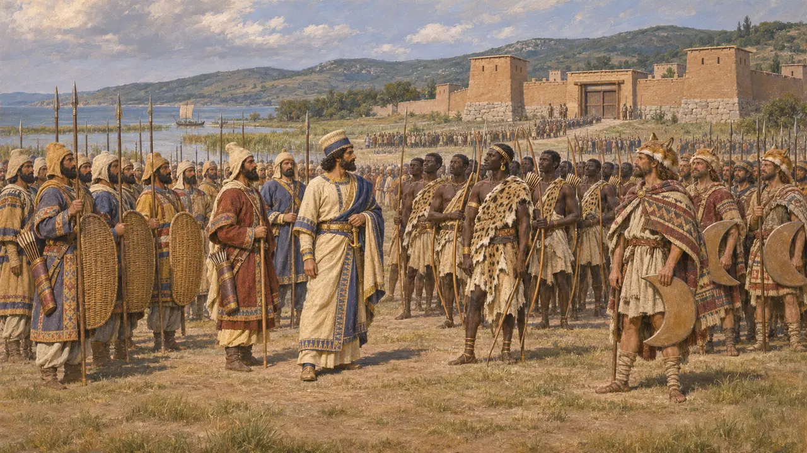
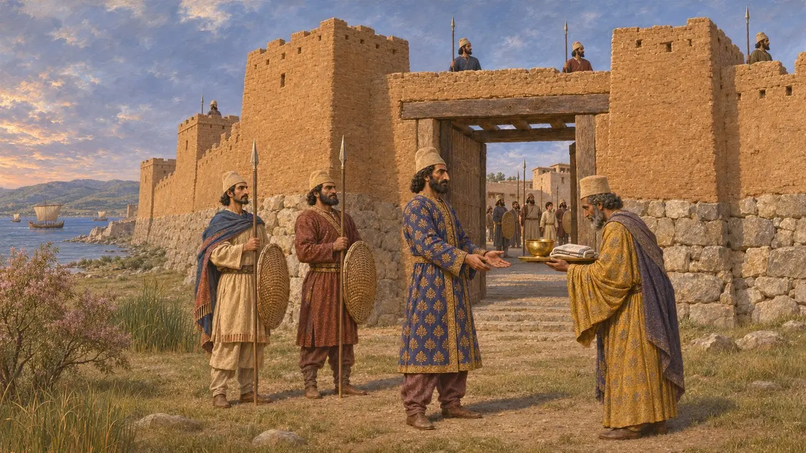

Dorisco
Forte persiano sulla costa tracia, dove Serse passò in rassegna il suo esercito, 480 a.C.
Nel gioco: Livello 9: Il canale
Dorisco era un forte persiano con una pianura costiera in Tracia, vicino alla foce del fiume Ebro. Dario vi pose una guarnigione durante la sua campagna contro gli Sciti. Nel 480 a.C. Serse sfruttò la pianura per passare in rassegna l'esercito e la flotta e per contare le sue forze di terra prima della marcia in Grecia. Quasi tutto ciò che sappiamo del luogo proviene da Erodoto, le cui cifre sull'esercito sono di gran lunga eccessive.
Nel gioco: Il gioco indica Dorisco come il luogo in cui Serse contò il suo esercito, seguendo Erodoto. Il metodo di conteggio e l'enorme totale appartengono al suo racconto, non a un documento persiano.

Un forte regio sull'Ebro
Racconto anticoDorisco era un tratto di costa con un'ampia pianura in Tracia, presso la foce del fiume Ebro (l'odierno Evros o Marica). Erodoto riferisce che vi sorgeva un forte reale e che Dario vi aveva mantenuto una guarnigione persiana fin dalla sua marcia contro gli Sciti, intorno al 513 a.C. In seguito Serse vi fece ammassare viveri: Dorisco era uno dei vari depositi lungo la costa tracia. L'ubicazione esatta del forte non è stata individuata con certezza.
Herodotus 7.59; Herodotus 7.25

Contare per recinto
Racconto anticoErodoto racconta che nel 480 a.C. Serse si fermò a Dorisco per contare il suo esercito di terra. Gli ufficiali ammassarono 10.000 uomini il più stretti possibile, tracciarono una linea intorno a loro e lungo di essa costruirono un muro alto all'incirca fino alla cintola. Un gruppo dopo l'altro fu poi fatto entrare nel recinto, finché non vi fu passato l'intero esercito. Erodoto dà come risultato 170 recinti, ossia 1.700.000 fanti.
Herodotus 7.60

Quanto era grande l'esercito
ContesoNessuno storico oggi accetta le cifre di Erodoto. Oltre a 1.700.000 fanti, egli aggiunge 80.000 cavalieri e una flotta di 1.207 triremi. Più avanti calcola oltre cinque milioni di persone, una volta inclusi i civili al seguito. Il territorio non avrebbe potuto nutrire né dissetare simili moltitudini. Le stime moderne dell'esercito combattente si collocano per lo più tra circa 100.000 e 300.000 uomini, e alcune sono ancora più basse.
Herodotus 7.87; 7.89; 7.184-186; J. F. Lazenby, The Defence of Greece 490-479 BC, 1993

Il catalogo dei popoli
ContesoA Dorisco Erodoto elenca l'esercito contingente per contingente, con abiti, armi e comandanti di ciascun popolo, dai Persiani e dai Medi fino agli Etiopi e ai Traci. Alcuni storici ritengono che attingesse a un documento persiano, o a un elenco simile a quelli delle iscrizioni reali che nominano le terre dell'impero. Altri lo considerano in gran parte una sua composizione, costruita su conoscenze greche e intesa a mostrare l'intero impero in marcia.
Herodotus 7.61-99; P. Briant, From Cyrus to Alexander, 2002

Il forte che non cadde mai
Racconto anticoErodoto racconta che Serse passò in rassegna le schiere su un carro e poi costeggiò la linea delle navi a bordo di un'imbarcazione sidonia. Nominò governatore di Dorisco un Persiano di nome Mascame. Quando in seguito i Greci cacciarono gli altri governatori persiani dalla Tracia e dall'Ellesponto, Erodoto afferma che nessuno riuscì a strappare Dorisco a Mascame. Serse gli inviava doni ogni anno, e Artaserse continuò a mandarli ai suoi discendenti.
Herodotus 7.100; Herodotus 7.105-106
Fonti
- Herodotus, Histories 7.25, 7.59-106
- P. Briant, From Cyrus to Alexander, 2002
- J. F. Lazenby, The Defence of Greece 490-479 BC, 1993
- A. Kuhrt, The Persian Empire: A Corpus of Sources from the Achaemenid Period, 2007